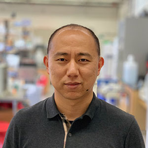
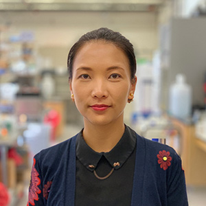

<div class="peoplebox">
  <div class="hugespacer"></div>
  <div class="peoplemediabox pull-left">
    <a href="">
      
    </a>
  </div>
  <div class="projecttextbox pull-left" style="line-height:100%">
    <p><h2>Chongyuan Luo</h2>
    <a href="https://twitter.com/chongyuanluo" target="_blank">
      
    </a>
    <br><strong>Principal Investigator</strong><br><br> B.S.,    China Agricultural University
    <br> Ph.D.,   Plant Biology, Rutgers the State University of New Jersey
    <br> Postdoc, Salk Institute for Biological Studies
    <br> Email: <a href="mailto:cluo@mednet.ucla.edu">cluo@mednet.ucla.edu</a></p>
  </div>
</div>

<div class="peoplebox">
  <div class="hugespacer"></div>
  <div class="peoplemediabox pull-left">
    <a href="">
      
    </a>
  </div>
  <div class="projecttextbox pull-left" style="line-height:100%">
    <p><h2>Yi Zhang</h2>
    <br><strong>Staff Research Associate III</strong><br><br> B.S.,    China Agricultural University
    <br> M.Sc.,   Botany, University of British Columbia
    <br> Email: <a href="mailto:yizhang@mednet.ucla.edu">yizhang@mednet.ucla.edu</a></p>
  </div>
</div>
